Miracle in a small back office. Part 2
- Start () function.
- InitSpoof () function.
- StartARPSpoof () function.
Let 's break our objective into two sub-objectives, for more convenience:
- we'll try to stop the network exchange between machines IPA and IPB.
- we'll intercept traffic between IPA and IPB and try to slow down the network exchange.
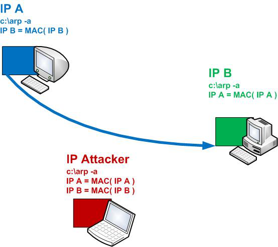
Before the experiment, let's move to the IPA machine and send a ping to IPB with the "- t" parameter in the cycle.
In this step, we will try to accomplish the first sub-objective (stopping the network exchange). In the next step, we will accomplish the second one, which is intercepting and slowing down the traffic.
The source of the turnkey solution is here: "sources/__sheva740/miracle/02/files/arpspoof_sub1/src/arpspoof_sub1.asm"
For starters, let’s open arpspoof_sub1.asm and go through the main features it contains. A simple algorithm will make our life easier.
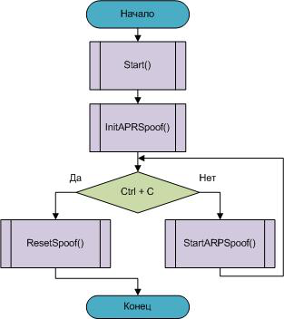
Start () function.
We see a command line. You can clearly see that if the program is run without parameters, there will be a message about the "- i" parameter error.
The "- i" parameter (derived from the word "interface"))) will display a numbered list of network interface identifiers in the system.
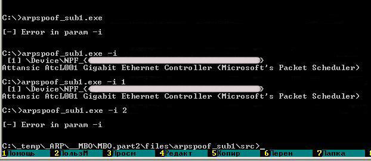
To get help with using the program, there is the "- h" parameter
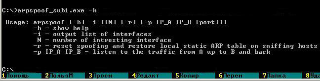
You've reached the "- s" parameter. Two IP-addresses should follow, let's call them IPA and IPB, and
IPA – is the address of packet "Sender";
IPB – is the address of packet "Recipient";
Here is where you must be careful! You should not run the program with this key. Generally speaking, nothing bad will happen, you may have to reboot to clear the local arp table, that's it. So for now, just follow my thoughts and the screenshots.
c:\...\files\arpspoof_sub1\src>arpspoof_sub1.exe -i 1 -s 192.168.1.2 192.168.1.3
When running it, keep a printout in front of you, parsing of the command line will occur. The APRSPOOF ‹ › structure will be partially completed. The program will then be initialized, namely the InitSpoof () procedure.
InitSpoof () function.
The purpose of this function is to complete the APRSPOOF ‹ › structure and launch the StaticARP() function twice.
For starters, let's break down the functions of the APRSPOOF ‹ › structure
ARPSPOOF struct ucSelfMAC ;My local MAC szTarget ;IP of receiver machine ucTargetMAC ;target machine MAC szIP ;IP of source machine ucIPMAC ;source machine MAC szSelfIP ;My local IP ucPretendMAC ;New replaced MAC hInterface ;Pointer to open network interface ARPSPOOF ends
Now complete its fields.
ARPSPOOF struct ucSelfMAC ;GetLocalMAC() szTarget ;IPB ucTargetMAC ;GetMAC(IPB) ;SendingARP(IPB) szIP ;IPA ucIPMAC ;GetMAC(IPA) ;SendingARP(IPA) szSelfIP ;GetLocalIP() ucPretendMAC ;GetLocalMAC() hInterface ;pcap_open_live() ARPSPOOF ends
It will be convenient to present MAC address as a function from its IP. Like this, for example: "for host with IP = IPA, its MAC = MAC (IPA)". This is just for putting it down conveniently.
From the scheme above, you can see how we complete the fields of this important function. The InitARP () function, in our case, uses the full arsenal of these support functions - GetLocalIP (), GetLocalMAC (), GetMAC () ... At this point you can look them up in the source.
The structure is completed, now we call the StaticARP () function twice.
You can view a demo of the result here:
"sources/__sheva740/miracle/02/files/StaticARP/StaticARP.asm"
First call - StaticARP(IPA, MAC(IPA));
Second call - StaticARP(IPB, MAC(IPB));
With these two calls executed, a match will be installed in the local ARP-tables that can be viewed on command "arp - a"
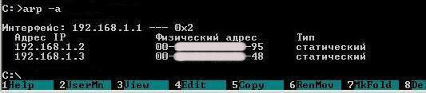
In our local arp - table of matches we set a match of IP - MACs for two machines. This is the right match, as correct MACs are specified for the IP.
It's crucial to know the real state of things.
So, we're ready for conducting an attack of the type ARP-spoofing type.
Oh, andanother thing before we start! Let's write the real MAC addresses on all three machines. This is easily done using the utility:
"sources/__sheva740/miracle/02/files/gETlOCALmac/getLocMAC.asm":
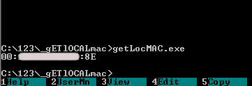
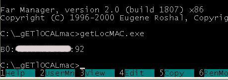
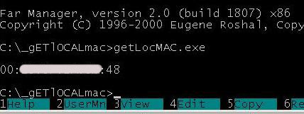
Run it on all the machines. If you are unable to do it due to any reason (if you are too lazy for instance), use the utility:
"sources/__sheva740/miracle/02/files/sendARP/sendARP.asm":
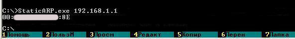
This one seems to be done. Let's move on to the next function.
StartARPSpoof () function.
Let's get naughty. )))
The purpose of this function is to run two threads. In these threads, ARP-replies are sent in an infinite loop. These ARP-replies substitute the IP-MAC matches in the ARP-tables of both machines for the ones we need.
The SpoofThread () does the following:
- Sends ARP - packet.
- Executes StaticARP () - to save the true IP - MAC matches on the attacking machine.
Let's look at it in more detail.
Thread "A" - we will persuade the IPB machine that
MAC(IPA) = MAC(IPAttack)
Thread "B" - we will persuade the IPA machine that
MAC(IPB) = MAC(IPAttack)
How to execute this task? For starters, let's remind to ourselves the structure of the response ARP-packet.
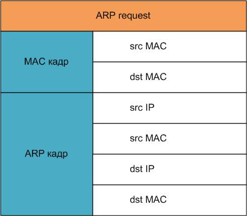
So, we need to create ARP-replies of the following content in the "A" and "B" threads.
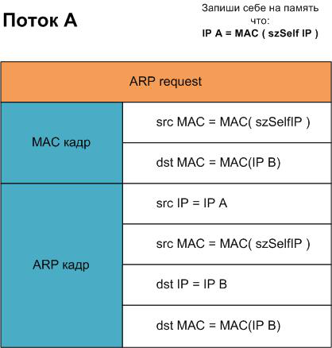
Each of the threads will send the packet using the SendingARP () function. Also, the StaticARP () function will be executed in every thread to keep the local ARP-table current. After launching both threads, let's go to machines IPA and IPB, one at a time, and see what changed there. The machine with IPA
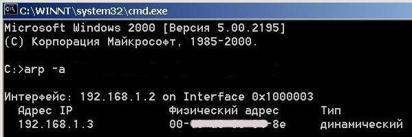
The machine with IPB
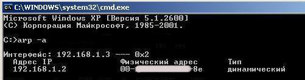
Now let's depict the performance of our processes as a nice scheme. All for better understanding. )))

And now for the main idea. What happens if we still want to run the program at this stage of development? What will happen if we type the following in the command line:
c:\... \files\arpspoof_sub1\src>arpspoof_sub1.exe -i 1 -s 192.168.1.2 192.168.1.3
... and press Enter? Let's suppose we did all that. What will we see?
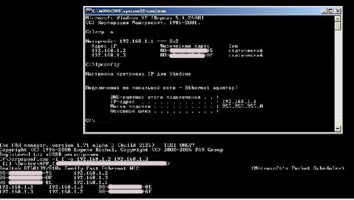
We ran the program on the attacker's machine and moved to IPA. Here is what we see ...
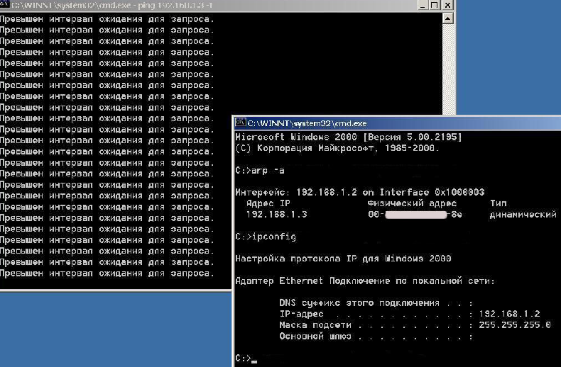
The ping stopped! Hooray! For better understanding, let's take another look at the diagram above. Earlier, before our intervention, IPA passed ICMP packets to IPB without intermediaries, and IPB aired responses towards IPA without intermediaries. After our program is run, IPA thinks that the IPB machine has its MAC = MAC (IPAtack), sending its packets there. What's the deal with our IPAttack? Does it really receive these packets from IPA? The thing is, no one taught it to respond to them, so when we send a ping to IPB while working on IPA, it seems like the network is down. )))
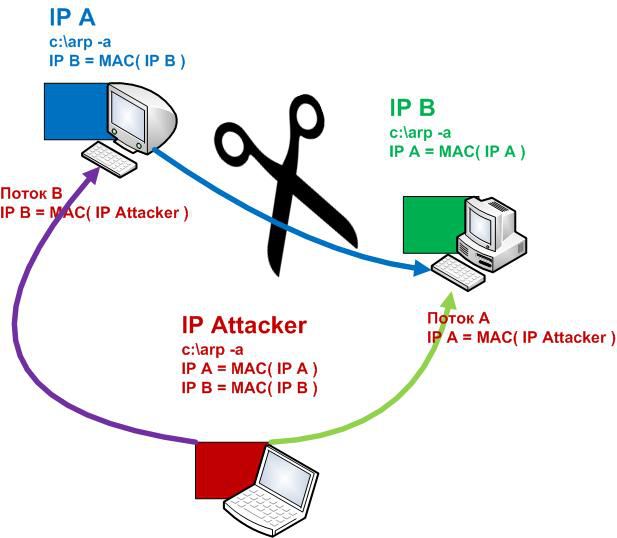
This is how you can annoy your neighbor when being in the same local network. But what happens if we stop the arpspoof_sub1.exe program on the IPAttack machine? Will the pings go from IPA to IPB as before? They will, but it's best to reboot to clear false information in the local ARP-tables of machines IPA and IPB. That's why it is best not to run the program at this stage of development, just like we warned. But there is no reason to get upset, we will eliminate this inconvenience in our next step. As for right now, not to overload you by accident, I will bow out. )))
Goodbye.
Sources: sources/__sheva740/miracle/02/files
______________________________
__sheva740
2012
Inception E-Zine